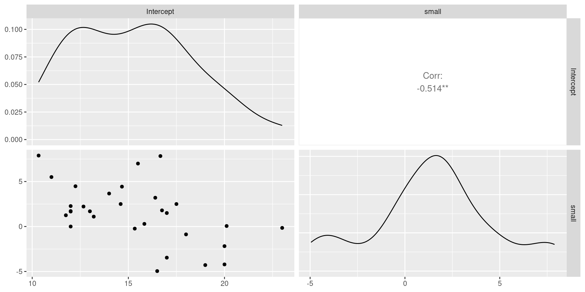
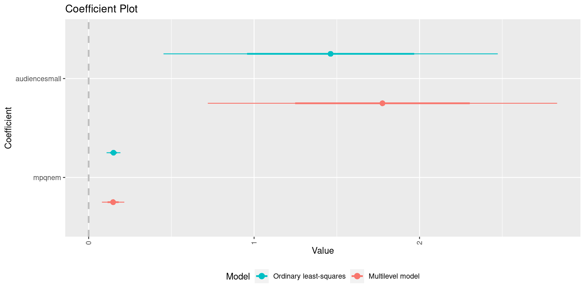

library(tidyverse)
library(coefplot)
library(DT)
library(GGally)
library(lme4)
source("../code/routines.R")Modern Statistical Computing
9. Multilevel models
David Rossell
Pompeu Fabra University
Reproducing these lecture notes
Load required R packages
Disclaimer: these notes borrow heavily from Roback & Legler’s Beyond multiple linear regression (free online)
Motivation
Multilevel models
We often encounter data that was collected at multiple levels
Example. Musician’s performance stress (negative affect score, PANAS questionnaire)
Performance covariates (Level 1)
Type of performance: solo, small ensemble, large ensembl
Audience: who attended (instructor, public, students, jury)
Musician covariates (Level 2)
Negative emotionality scale from MPQ questionnaire
Gender, instrument…
Goal: how does stress depend on emotionality, accounting for other covariates?
Issue: data clearly non-independent
musicdata.txt has several diary entries for each musician (id). In total, 497 performances by 37 musicians
#convert id to factor, center mpqnem, create Large ensembl indicator
music= as_tibble(read.table("../datasets/musicdata.txt", header=TRUE)) |>
mutate(id= factor(id), mpqnem= mpqnem-mean(mpqnem), audience= ifelse(perform_type=='Large Ensemble', "large", "small")) |>
relocate(id, diary, na, mpqnem, audience)
music# A tibble: 497 × 17
id diary na mpqnem audience previous perfor…¹ memory pa age gender
<fct> <int> <int> <dbl> <chr> <int> <chr> <chr> <int> <int> <chr>
1 1 1 11 -15.6 small 0 Solo Unspe… 40 18 Female
2 1 2 19 -15.6 large 1 Large E… Memory 33 18 Female
3 1 3 14 -15.6 large 2 Large E… Memory 49 18 Female
4 1 4 19 -15.6 small 3 Solo Memory 41 18 Female
5 1 5 10 -15.6 small 4 Solo Memory 31 18 Female
6 1 6 13 -15.6 small 5 Solo Memory 33 18 Female
7 1 7 11 -15.6 small 6 Solo Memory 34 18 Female
8 1 8 13 -15.6 small 7 Solo Memory 43 18 Female
9 1 9 10 -15.6 small 8 Solo Score 34 18 Female
10 1 10 10 -15.6 small 9 Solo Score 45 18 Female
# … with 487 more rows, 6 more variables: instrument <chr>, years_study <int>,
# mpqab <int>, mpqsr <int>, mpqpem <int>, mpqcon <int>, and abbreviated
# variable name ¹perform_typeOther examples
Two-level models used in many examples
Housing prices vs. house & neighborhood covariates
Ambiguity of political tweets made in various districts vs. politician & district covariates
One can also consider >2 levels, for example
Student marks vs. student, class & school covariates
Football player’s salary vs. player, team & league covariates
We focus on 2 levels for simplicty
Music data
We focus on
Negative affect score (outcome):
naAudience size (large vs. small/solo) (Level 1 covariate):
LargeNegative emotionality (Level 2 covariate):
mpqnem
We can explore data as usual

Option 1. Standard linear regression
The analysis below is wrong. It assumes that all observations are independent, giving too narrow CIs and too small P-values (inflated false positives)
Option 2. Two-stage analysis
Consider fitting a model for each musician at level 1: stress vs. performance type. Note: we can only use musicians with the 3 performance types
Code
fitmodel= function(df) { #Return OLS
naudience= length(unique(df$audience))
if (naudience == 2) {
ans= round(coef(lm(na ~ audience, data=df)),3)
} else {
ans= rep(NA, 2)
}
names(ans)= c('Intercept','small')
return(ans)
}
music_nest= group_by(music, id) |> nest()
b1= tibble(id=music_nest$id, map_df(music_nest$data, fitmodel))
DT::datatable(b1)Step 1 coefficients are interpreted as usual
Intercept: average musician stress (for reference category)
Small ensembl/Solo: increased stress for small/solo peformance
Step 2: regress estimates from Step 1 on level 2 covariate (negative emotionality)
# A tibble: 37 × 4
id mpqnem Intercept small
<fct> <dbl> <dbl> <dbl>
1 1 -15.6 16.5 -4.96
2 2 -10.6 17 -3.46
3 3 -10.6 12 1.71
4 5 8.37 20 -2.18
5 6 -5.63 11.8 1.25
6 7 12.4 16.4 3.2
7 8 15.4 15.8 0.292
8 9 -7.63 18 -0.875
9 10 -4.63 13.2 1.1
10 12 8.37 14.7 4.43
# … with 27 more rows# A tibble: 2 × 4
Parameter Estimate `Conf. Int.` `P-value`
<chr> <dbl> <chr> <chr>
1 (Intercept) 15.4 (14.339,16.55) <0.00001
2 mpqnem 0.121 (0.018,0.224) 0.02314 

Issues
The two-step approach suffers from several issues
Estimates unavailable for some musicians (7 in our example)
All musicians receive the same weight, regardless of how much data (performances) we have (estimates precision)
Suboptimal way to share info across musicians
Further subtle but relevant issue \((\hat{\beta}_{1i},\hat{\beta}_{2i},\hat{\beta}_{3i})\) for musician \(i\) are correlated: using three separate regressions not ideal
A proper multi-level model
Let \(y_{ij}\) be stress for subject \(i\) in performance \(j\)
Level 1: \[y_{ij}= \beta_{0i} + \beta_{1i} \mbox{small}_{ij} + \epsilon_i\]
Level 2: \[ \begin{aligned} \beta_{0i}&= \alpha_0 + \alpha_1 \mbox{mpqnem}_i + u_i \\ \beta_{1i}&= \gamma_0 + v_i \end{aligned} \] where \(\epsilon_i \sim N(0,\sigma^2)\) and \((u_i,v_i) \sim N(0, \Sigma)\) \[ \Sigma= \begin{pmatrix} \sigma_u^2 & \rho \sigma_u \sigma_v \\ \rho \sigma_u \sigma_v & \sigma_v^2 \end{pmatrix} \] As discussed, the intercept \(\beta_{0i}\) and slope \(\beta_{1i}\) may be correlated. Note: one could add mpqnem to the \(\beta_{1i}\) regression
Composite model
Re-write the model, plugging in the expressions for \(\beta_{0i}\) and \(\beta_{1i}\) into Level 1
\[ \begin{aligned} &y_{ij}= \beta_{0i} + \beta_{1i} \mbox{small}_{ij} + \epsilon_i= \\ &\alpha_0 + \alpha_1 \mbox{mpqnem}_i + u_i + (\gamma_0 + v_i) \mbox{small}_{ij} + \epsilon_i= \\ &\alpha_0 + \alpha_1 \mbox{mpqnem}_i + \gamma_0 \mbox{small}_{ij} + u_i + v_i \mbox{small}_{ij} + \epsilon_i \end{aligned} \]
Main effects for mpqnem and small
Random intercept for individual \(i\) is \(\alpha_0 + u_i\), random slope is \(\gamma_0 + v_i\)
Key points
If \(\alpha_1=0\), mpqnem has no effect (our primary goal)
\((u_i,v_i)\) imply dependent observations within musician \(i\)
The model can be fit with lmer (package lme4). The formula specifies the composite model (small audience nested within musician)
Linear mixed model fit by REML ['lmerMod']
Formula: na ~ mpqnem + audience + (audience | id)
Data: music
REML criterion at convergence: 2983.5
Scaled residuals:
Min 1Q Median 3Q Max
-2.0844 -0.6514 -0.1631 0.5024 4.0155
Random effects:
Groups Name Variance Std.Dev. Corr
id (Intercept) 2.5416 1.5942
audiencesmall 0.3123 0.5588 0.29
Residual 21.8055 4.6696
Number of obs: 497, groups: id, 37
Fixed effects:
Estimate Std. Error t value
(Intercept) 14.9311 0.5091 29.330
mpqnem 0.1480 0.0338 4.379
audiencesmall 1.7759 0.5279 3.364
Correlation of Fixed Effects:
(Intr) mpqnem
mpqnem -0.079
audiencsmll -0.706 0.093Estimates similar to least-squares, but CIs usually wider
We can extract inference as usual
2.5 % 97.5 %
.sig01 0.63392735 2.3356500
.sig02 -1.00000000 1.0000000
.sig03 0.00000000 1.4137562
.sigma 4.38430474 4.9853094
(Intercept) 13.91111139 15.9107523
mpqnem 0.08113646 0.2145665
audiencesmall 0.74974164 2.7958929Random effects
$id
(Intercept) mpqnem audiencesmall
1 13.92498 0.1479837 1.455107
2 14.24290 0.1479837 1.584644
3 14.10146 0.1479837 1.614089
5 15.04837 0.1479837 1.755218
6 13.28839 0.1479837 1.476762
7 15.00823 0.1479837 1.843930
8 13.60393 0.1479837 1.510190
9 16.64485 0.1479837 1.915102
10 14.02624 0.1479837 1.600954
12 15.23267 0.1479837 1.901696
13 14.06361 0.1479837 1.644792
15 14.46416 0.1479837 1.789776
16 15.10116 0.1479837 1.885869
17 18.14587 0.1479837 2.141913
18 13.78316 0.1479837 1.613648
19 14.03576 0.1479837 1.582296
20 15.18486 0.1479837 1.827277
21 14.26927 0.1479837 1.696042
22 16.76469 0.1479837 2.291188
24 15.47023 0.1479837 1.837804
25 16.03228 0.1479837 2.210039
27 15.33897 0.1479837 1.827904
28 14.54096 0.1479837 1.696819
29 15.76649 0.1479837 1.978593
30 14.59642 0.1479837 1.710101
32 17.37930 0.1479837 2.191847
33 15.63331 0.1479837 1.918135
34 14.95686 0.1479837 1.714348
35 16.44705 0.1479837 2.035726
36 12.50227 0.1479837 1.413915
37 15.74991 0.1479837 1.976206
38 14.76547 0.1479837 1.676393
39 15.67268 0.1479837 1.926111
40 15.18742 0.1479837 1.827796
41 12.58195 0.1479837 1.299913
42 13.66114 0.1479837 1.497690
43 15.23511 0.1479837 1.837458
attr(,"class")
[1] "coef.mer"Generalized linear mixed models
Multilevel models extend directly to GLMs, e.g. logistic or Poisson regression
Function
glmerArgument
family
Statistical inference
Parameter estimation
\[ y_{ij}= \alpha_0 + \alpha_1 \mbox{mpqnem}_i + \gamma_0 \mbox{small}_{ij} + u_i + v_i \mbox{small}_{ij} + \epsilon_i \mbox{, } (\epsilon_i, u_i, v_i) \sim N(0,\Sigma) \]
Fixed effects: \(\alpha_0, \alpha_1, \gamma_0\), variance components: \(\Sigma\)
Random effects: \(u=(u_1,\ldots,u_n)\), \(v=(v_1,\ldots,v_n)\)
Two popular criteria to fit multilevel models
MLE: \(\max p(y \mid \alpha_0, \alpha_1, \gamma_0, \Sigma, u, v)\)
Restricted MLE: first \(\max_{\alpha, \gamma, \Sigma} p(y \mid \alpha_0, \alpha_1, \gamma_0, \Sigma)\), then \[ \max_{u,v} p(y \mid \hat{\alpha}_0, \hat{\alpha}_1, \hat{\gamma}_0, \hat{\Sigma}, u, v) \]
MLE vs RMLE
MLE a bit worse than RMLE (default in lmer)
Larger estimation error for fixed effects
Biased for variance components (under-estimation)
But, MLE allows testing the removal of fixed effects via likelihood-ratio test
Testing the removal of random effects is a bit more complex
Testing fixed effects
As with GLMs, anova tests whether fixed effects can be removed (it uses MLE internally). We also get AIC and BIC.
Data: music
Models:
fit3: na ~ audience + (audience | id)
fit2: na ~ mpqnem + audience + (audience | id)
npar AIC BIC logLik deviance Chisq Df Pr(>Chisq)
fit3 6 3006.8 3032.0 -1497.4 2994.8
fit2 7 2992.8 3022.3 -1489.4 2978.8 15.928 1 6.578e-05 ***
---
Signif. codes: 0 '***' 0.001 '**' 0.01 '*' 0.05 '.' 0.1 ' ' 1Testing variance components
Since random slopes for audience have small variance, consider a model where only the intercept is random (same effect for small audience across individuals)
Linear mixed model fit by REML ['lmerMod']
Formula: na ~ mpqnem + audience + (audience | id)
Data: music
REML criterion at convergence: 2983.5
Scaled residuals:
Min 1Q Median 3Q Max
-2.0844 -0.6514 -0.1631 0.5024 4.0155
Random effects:
Groups Name Variance Std.Dev. Corr
id (Intercept) 2.5416 1.5942
audiencesmall 0.3123 0.5588 0.29
Residual 21.8055 4.6696
Number of obs: 497, groups: id, 37
Fixed effects:
Estimate Std. Error t value
(Intercept) 14.9311 0.5091 29.330
mpqnem 0.1480 0.0338 4.379
audiencesmall 1.7759 0.5279 3.364
Correlation of Fixed Effects:
(Intr) mpqnem
mpqnem -0.079
audiencsmll -0.706 0.093Linear mixed model fit by REML ['lmerMod']
Formula: na ~ mpqnem + audience + (1 | id)
Data: music
REML criterion at convergence: 2983.7
Scaled residuals:
Min 1Q Median 3Q Max
-2.0809 -0.6697 -0.1606 0.4884 3.9834
Random effects:
Groups Name Variance Std.Dev.
id (Intercept) 3.019 1.738
Residual 21.880 4.678
Number of obs: 497, groups: id, 37
Fixed effects:
Estimate Std. Error t value
(Intercept) 14.90570 0.52515 28.383
mpqnem 0.15032 0.03358 4.476
audiencesmall 1.79055 0.52380 3.418
Correlation of Fixed Effects:
(Intr) mpqnem
mpqnem -0.071
audiencsmll -0.730 0.089Testing variance components
Random slopes \(v_i \sim N(0, \sigma_v^2)\), test the null hypothesis \(H_0: \sigma_v^2\)
Likelihood-ratio test has a complex asymptotic distribution (not \(\chi^2\))
Better to use a “parametric Boostrap test”
Fit the null model (e.g. no random slopes). Use it to simulate many datasets
For each dataset, fit the larger model & compute the likelihood-ratio test statistic
P-value: proportion of simulated LRTs > observed data LRT
Easy to do in R: function bootstrapAnova. Below only B=100 samples are used so that it runs fast, in practice you want at least 1000
Data: music
Parametric bootstrap with 100 samples.
Models:
model0: na ~ mpqnem + audience + (1 | id)
modelA: na ~ mpqnem + audience + (audience | id)
npar AIC BIC logLik deviance Chisq Df Pr_boot(>Chisq)
model0 5 2989.0 3010.1 -1489.5 2979.0
modelA 7 2992.8 3022.3 -1489.4 2978.8 0.1997 2 0.71What model do the AIC/BIC favor? According to BIC, can we drop the random intercept?
Exercise
Consider 4 covariates
Level 1.
audience(small/large),bymemory(played by memory)Level 2.
mpqnem(negative emotionality score)
Fit a model with fixed effects for all 3 covariates, and random slopes for audience and bymemory
Interpret the estimated fixed effect of
bymemory. What association with stress does it suggest?Is
bymemorysignificantly associated with stress?
Getting started
library(tidyverse)
library(lme4)
source("../code/routines.R")
music= as_tibble(read.table("~/github/statcomp/datasets/musicdata.txt", header=TRUE)) |>
mutate(id= factor(id), mpqnem= mpqnem-mean(mpqnem), audience= ifelse(perform_type=='Large Ensemble', "large", "small"), bymemory= ifelse(memory=='Memory',1,0) ) |>
relocate(id, diary, na, mpqnem, audience)